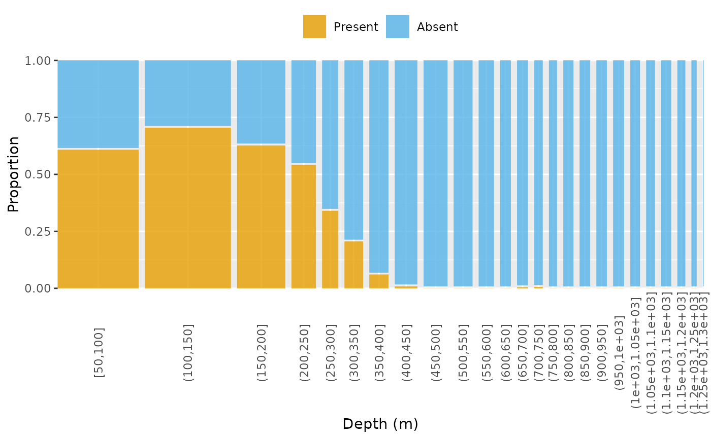

Plot proportions of factor levels (y axis) by bins (x axis)
plot_proportion.RdBin a numerical column for the categorical x axis. Calculate the proportion of the rows that are present for each level of an additional factor column, like sex, by x-axis bins.
Usage
plot_proportion(
data,
column_factor,
column_bin,
digits = 0,
bar_width = c("n", "equal"),
...
)Arguments
- data
A data frame.
- column_factor
<
data-masking> Variable indatafor the grouping structure. Should be a variable indatathat contains a factor but it can also be a variable indatathat stores characters. See the examples for ideas.- column_bin
<
data-masking> Variable indatafor the binning structure. If this is not already a factor or character, thenggplot2::cut_width()will be used to create bins. The bins are saved inbinin the returned ggplot2 object.- digits
A numeric value passed to the digits argument of
round(). Positive values pertain to rounding the right side of the decimal place and negative values pertain to rounding the left side of the decimal place, i.e., to the tens or hundreds with -1 and -2. The default is to round to the nearest integer usingdigits = 0.- bar_width
A string of
"n"or"equal", where the former leads to bar widths based on the number of observations contained in that group and the latter leads to equally-sized bars for all bars with data. For groups without any data, the width of the placeholder on the x axis will be smaller than the width of the bars for groups with data regardless of which option you choose. The default is to have bars of variable widths, i.e.,"n".- ...
Additional arguments that users want to pass to
ggplot2::cut_width(). Ifdata[[column_bin]]is not a factor, then at leastwidthneeds to be passed to create bins. But, any argument accepted byggplot2::cut_width()can be passed, whereboundary = 0is common so the calculation of bins will start at zero rather than the minimum value present, preventing bins like (35.4, 36.4] when you really want (35, 36].
Details
ggmosaic is used to create a ggplot2 object for categorical data that can be modified upon return.
Examples
# Add presence/absence factor to data
temp <- catch_nwfsc_combo |>
dplyr::mutate(new = factor(
cpue_kg_km2 <= 0,
levels = c(FALSE, TRUE),
labels = c("Present", "Absent")
))
# Plot depth bins (50 m) by presence/absence with default colors
plot_proportion(
data = temp,
column_factor = new,
column_bin = Depth_m,
width = 50,
boundary = 0
)

# Plot latitude bins (1 decimal degree) by presence/absence with custom
# colors
plot_proportion(
data = temp,
column_factor = new,
column_bin = Latitude_dd,
width = 1,
boundary = 0
) +
ggplot2::scale_fill_manual(values = c(
"darkorchid3",
grDevices::gray(0.7)
))
#> Scale for fill is already present.
#> Adding another scale for fill, which will replace the existing scale.
# Plot depth bins (25 m) by sex (F, M, U)
plot_proportion(
data = bio_nwfsc_combo |>
dplyr::mutate(Sex = codify_sex(Sex)),
column_factor = Sex,
column_bin = Depth_m,
width = 25,
boundary = 0
)
#> The following unmatched values were found n times in `codify_sex()`:
#> 'NA' (n = 1)
# Change to equal sized bars
plot_proportion(
data = bio_nwfsc_combo |>
dplyr::mutate(Sex = codify_sex(Sex)),
column_factor = Sex,
column_bin = Depth_m,
width = 25,
boundary = 0,
bar_width = "equal"
)
#> The following unmatched values were found n times in `codify_sex()`:
#> 'NA' (n = 1)